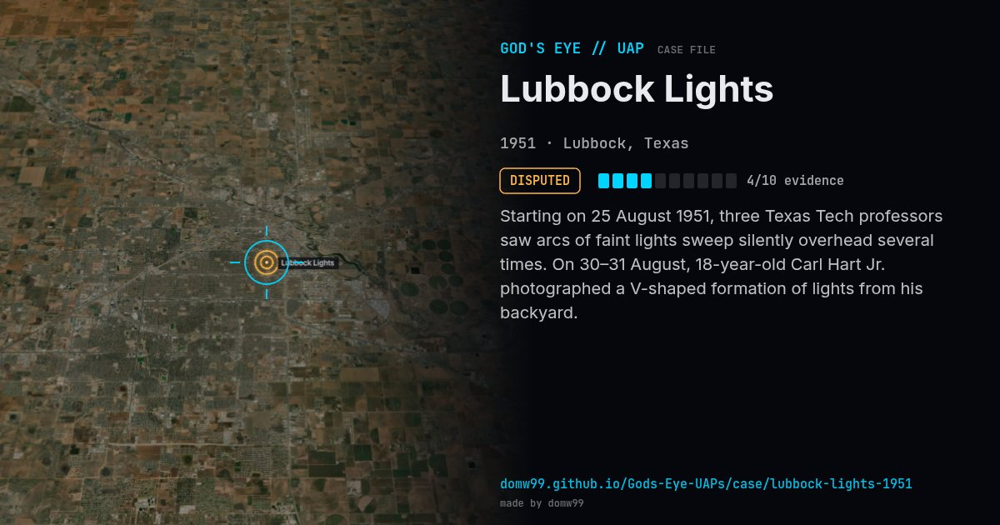

Lubbock Lights
DISPUTED

Starting on 25 August 1951, three Texas Tech professors saw arcs of faint lights sweep silently overhead several times. On 30–31 August, 18-year-old Carl Hart Jr. photographed a V-shaped formation of lights from his backyard.
Explanation
Project Blue Book’s Edward Ruppelt concluded the lights were probably plovers reflecting street lights; the photos themselves were never shown to be faked.
What was seen
Shape: V / arc formation of 15–30 bluish lights
Witnesses: Texas Tech professors, residents
Duration: Seconds per pass; repeated over weeks